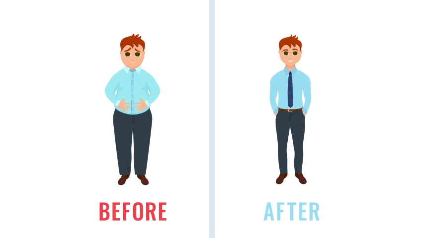

Reduce Weigth Tips

-
Water!
If you drink at least 3 liters of water daily, the body will be dehydrated and all the toxins that stay in the body will be eliminated. And if you drink water from time to time at regular intervals, the body's metabolism will increase. This will also
reduce the belly button around the abdomen.
-
Honey!
Sugar is also a factor in the formation of bloating around the abdomen. So if you add honey instead of sugar in your diet, you will lose belly fat and lose weight.
-
Lemon juice!
The only way to reduce the bloating around the abdomen is to drink lemon juice daily in the morning. Pour lemon juice in warm water and drink it with a little salt and honey, it will definitely reduce the belly.
-
Garlic!
Pound has twice as much energy as lemon juice. So if you eat 1 clove of garlic in the morning, the fats in the body will be dissolved and the blood flow in the body will be smooth
-
Ginger!
If you add a lot of ginger in your diet, it will help greatly in reducing belly fat. It is also rich in antioxidants, which help regulate insulin secretion and lower blood sugar levels.
-
Citrus fruits!
If you eat a lot of citrus fruits, the vitamin C in it will dissolve and expel the unwanted fats that stay in the body. Thus you can get beautiful body.